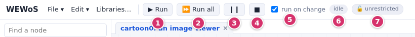
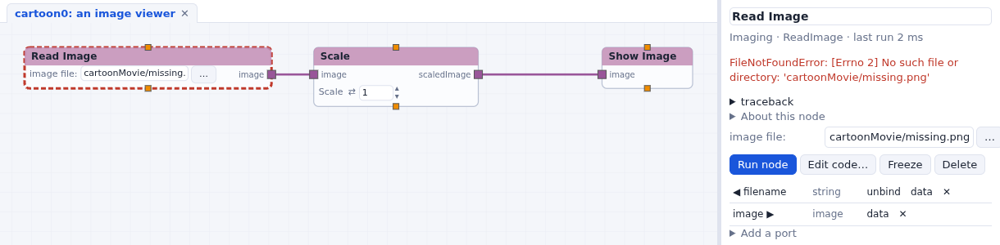

Running a network
How nodes run, the run buttons, and what a node does when it fails.

How data flows
A node runs when all its required inputs have data and at least one of them has new data. Its outputs then carry new data to the nodes connected to them, which run in turn. The network is run breadth first, as in Vision: a node runs after all the nodes above it that are running in the same pass, so a node with two inputs fed by the same source runs once, with both values.
- Run (Vision's run) runs the nodes that have new data, and what is below them. On a network just opened, that is everything.
- Run all runs every node again, from the nodes that have no input connected.
- Pause holds the run after the node that is running; press it again to go on.
- Stop stops the run after the node that is running.
- run on change (Vision's immediate mode): when it is checked, changing a widget, or connecting a node, runs the part of the network below it. Uncheck it to set several widgets, then press Run.
- The network's state: idle or running.
One run happens at a time, on the server. Changing a widget while the network runs sets its value at once, and the latest change runs when this run ends: turning a dial fast through many steps gives one run each time the network is free, not one run per step. Stop and Pause also drop a change that is waiting to run. Run this node in a node's menu (or Run node in the parameter column) runs one node and what is below it.
Loops and stops
Some nodes schedule the nodes below them several times: iterate sends the items of a list
one at a time, and runs what is below it for each; while loops on a condition. A node whose
code returns 'Stop' stops the data there: the nodes below it do not run in this pass
(isTrue_Stop does this on a condition). A frozen node does not run.
The special ports order nodes that do not exchange data: a connection from a node's
trigger port (bottom edge) to another node's runNode port (top edge) runs
the second after the first.
What the nodes show
| outline | the node |
|---|---|
| orange, thick | is running |
| red, dashed | failed: its code raised an error |
| amber | stopped: it returned 'Stop', or a required input had no data |
| light blue fill | is frozen |
| red, on a pale node | is not available here (an imported Vision node that has no counterpart); it keeps its ports and code but does not run |

What nodes print goes to the Log under the network (click it to open it).
Execution modes
Every network runs in one of three execution modes, shown by the badge next to its state (7 in the picture above; see how each network runs):
- 🔓 Unrestricted: the network runs in the WEWoS server, with your rights, as every network did in Vision. New networks, which you build yourself, run this way.
- 🛡 Sandboxed or 🛡 read-only: the network runs in its own process, confined by the operating system. Its canvas is framed and tinted, green or amber. Running it is the same as above: the run buttons, widgets, viewers and picks work as usual.
Opening a network file or an example asks which mode to use. To change the mode of the network on screen, click the badge or use File > Execution mode…: the network is saved, closed and opened again in the new mode, so the results of its last run are not kept.
What changes for an isolated network when it runs:
- Files. A sandboxed network sees only its own folder and the folders you granted: a node that reads a file elsewhere fails as if the file did not exist. Upload the file (the ⇧ button of a file widget), or grant its folder in the execution mode dialog. A read-only network reads every file you can, and writes only in its folder.
- Internet. It has no internet access unless you allow it. Fetch PDB still works: WEWoS downloads the entry for the network.
- Stopping. Stop (■) waits for the running node to finish. If an isolated network has not stopped five seconds later, WEWoS offers Force stop, which ends its process and starts it again from its last autosave (also File > Force stop).
The Execution modes page has the details: the three modes, granting folders, and how Linux, macOS and Windows confine a network.